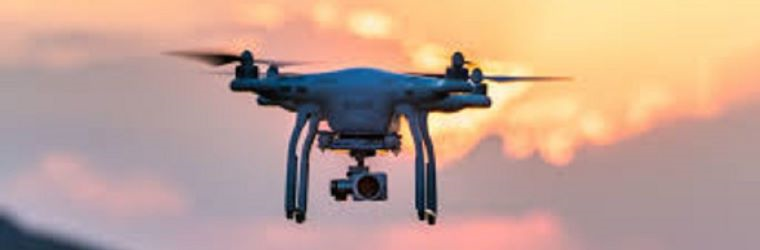

The Ins and Outs of Drone Usage
What Are Drones?
Drones are an amazing invention which, when used right, can save lives, reduce costs, and provide vast amounts of quality research for users. Drones have many purposes and have evolved greatly over time from when they were first created.
Drones are a huge asset to society, when used right, and can have positive impacts on society.
Drones are basically flying robots whose route is either controlled remotely from someone on the ground or embedded into the software. They are formally called unmanned aerial vehicles (UAVs) and classify as aircrafts.
When people think of drones, they often only see the problems and forget how much they have helped society.

Drones have many purposes, and are used for:
- Military
- Measuring Weather and Atmospheric Conditions
- Monitoring Traffic
- Search and Rescue Missions
- Farming
- Archaeology Inspection
- Collecting Research from Animal Tracking
- Border Surveillance
- Recording Scenes
- Identifying Failures in Renewable Energy Plants
But How Do They Work?
The drones have mapping software which allows for efficient and effective flights. Good mapping software is easy to use and has straightforward programs for planning the flight, and collecting and processing the data. The output usually has minimal errors and distortion and is therefore accurate, as well as having an efficient way to process the data. Mapping software can also provide a visual representation of data and tools to be more user-friendly.
They also have hardware including cameras, which can record the route of the aircraft so the pilot can watch what is happening from where they are. Cameras must be useful for the purpose of the drone and therefore include thermal cameras, HD cameras, infrared camera sensors, camera modules, embedded cameras, just to list a few.
Additional to cameras, important hardware features include the “Central flight controller”. This is necessary to stabilise and balance the aircraft. Additionally, the Central flight controller gives the data recorded to the pilot and receives commands back from them, changing the motors and speed. How does it do this you may ask? Well, there are sensors in the Central flight controller and it can measure the direction of the magnetic field, just like a compass.
Besides from these necessary aspects, drones can also include features for specific tasks, including:
- Multispectral cameras and sensors measuring crop health for agriculture
- Thermal imaging cameras for search and rescue
- Surveying, 3D mapping, and topographical mapping for construction
- Both RGB and Thermal drone cameras for infrastructure inspection
Some of the more common features in drones include a First-Person View (FVP) Mode which allows users to be immersed in the flying, GPS and Waypoint navigation allowing drones to remain stable and have pre-planned routes, and Obstacle Avoidance which allows drones to detect obstacles and avoid them using sensors.
Drones are a huge asset to society, when used right, and can have positive impacts on society. However, drones bring some negative consequences in society.
Effect on Society
Drones are helpful in many ways. The revolutionary technology has benefited society in many ways through the innovations seen above. But with new drone technology, new problems are constantly arising. Drones have raised and will continue to raise many social, legal, and ethical issues, and here's some of the main ones.
Privacy
Due to drones having the ability to record data with cameras installed brought up legal, ethical, and social issues among the people about individual rights and privacy laws, whether it is morally right. Technological advances mean that drones can capture high quality images and videos from far away, raising concerns about whether this is invading peoples’ privacy in their own homes and private spaces. "The scary thing about the future... there will be tiny cameras everywhere, and they'll be flying around like mosquitoes and drones." said Matt Groening.

But with new drone technology, new problems are constantly arising.
The Privacy Act 1988 (Cth) as well as the Australian Privacy Principles (APPs) are two laws that drone operators must follow to make sure people can keep their privacy. Additionally, following these laws is also necessary in an ethical sense as maintaining trust and confidentiality means that drone users should be transparent about how and where they collect data. Despite this, privacy is still a concern as data that can be collected still contains personal data, and if this data is compromised it can lead to problems.
Intellectual Property Rights and Commercial Use of Drones
Drones are constantly used in industries such as film, photography, and surveying. Legally, drone operators should respect intellectual property rights of others when used in these industries and must make sure they follow copyright laws. Additionally, when drones users take photos or videos of peoples’ private property without having permission, this is overstepping legal boundaries. The design, software, technology of drones can also be protected through intellectual property rights such as trademark, copyright, and patents.
Drone Accidents
When drones hurt people or damage property, it raises legal, ethical, and social issues. Legally, those who were hurt in the crash can claim for trespassing or negligence due to tort laws. Accidents often happen because people are recklessly using the drone. Not only can they face criminal charges, but they also are endangering public safety, leading to the ethical issues of who should be able to use drones, and the social issues of whether drones are compromising public safety.
Military uses
Another ethical issue of drones is when they are used in warfare. Some say that targeted killings by drones can lead to illegal uses of them despite it being justified under international law. It is also a social concern because civilians may mistakenly be targeted. Lastly, when drones have AI installed into them, ethical concerns of whether the AI, should be holding the decision of life and deathalthough that is more complicated than just about drone usage.

Recommendation
Often, the trouble caused by drones is due to the operator not following the legal guidelines and thinking through why they’re using the technology. It can be argued that the legal guidelines are lacking clarity in ethical and legal elements, such as in areas previously mentioned for ethical issues, and that there is a need for clearer laws. In the end, it comes down to whether the operators are responsible with their drone usage. "People talk about drones like they're a bad thing, but they forget there are people behind them." said David Hewlett.
In the end, it comes down to whether the operators are responsible with their drone usage.
So what should drones be used for?
When using drones, people should respect others privacy and not record any data of others and their property without their permission, not only due to legal implications but also to be an ethical member of society. Surveillance is the most problematic use of drones in regard to privacy and should only be left to government approved uses. Additionally, these people must follow the privacy laws of Australia and have a plan for making sure the data does not get leaked, and if it does, what they would do next. People value their privacy, so while general usage of drone is perfectly fine the operators should respect others as a person.
Drones used for commercial purposes is more efficient and economically beneficial and is therefore a good use of the technology. When used, people must make sure they protect their own intellectual property to ensure that they will have legal compensation if copyright laws are broken. People who make the drones should also protect their designs through trademark, copyright, and patents. If people don't do this, others can take credit for their work which is an ethical problem and impacts the individual as they may lose profit or recognition for their intellectual property.
When drones are used for general purposes, they should be handled with care and fulfil their specific purpose. When operators are not careful with their drone usage, accidents can happen where people get hurt. While drones are helpful in a lot of ways, users should always take care to make sure nothing will be hurt or damaged in their usage time. For example, when an operator is flying their drone, they should always stay focused on the task and understand that other vehicles are in the sky, such as other drones and flying technology, and that there are general members of the public below.
Drones used in military is more complicated, and should be only used for more of a support role in military operations, such as for assisting in cargo delivery, gathering information in some circumstances, and electronic warfare. Meanwhile, uses like mass killings and targeted attacks are more morally ambiguous and therefore should not be permitted. Not only are they ethically an issue, but having drones that are able to perform these targeted attacks endanger many lives in an inhumane way of fighting.

Lastly, for uses such as agricultural, archaelogical, search and rescue, measuring atmospheric conditions, identifying failures in renewable energy sources, and researching animals are barely harmful to society and have longlasting beneficial impacts. These uses have been game-changers in their fields of work and are examples of good technology usage by humanity.
References
Afif. (2023, October 27). 10 Smart Features in Drones. Aonic Malaysia. https://www.aonic.com/my/blogs-drone-technology/10-smart-features-in-drones/
Bukowski, D. (2019, September 26). The evolution of drones - C1 Reality.. C1 Reality. https://c1realty.com.au/2019/09/the-evolution-of-drones/?doing_wp_cron=1710213457.2737860679626464843750
Daly, D. (2020, June 10). A Not-So-Short History of Unmanned Aerial Vehicles (UAV). Consortiq.https://consortiq.com/uas-resources/short-history-unmanned-aerial-vehicles-uavs
Drones: what they are, how they work, Spanish Regulation. (2024). Ferrivial. https://www.ferrovial.com/en/resources/drones/#:~:text=Drones%20are%20small%20or%20medium
Gondek, C. (2023,June 30). The Ethical Concerns in Drone Technology. Originstamp.com. https://originstamp.com/blog/the-ethical-concerns-in-drone-technology/
gorillajobs. (2023, October 1). Legal Challenges of Drone Technology. Gorilla jobs.https://blog.gorillajobs.com.au/2023/10/02/legal-challenges-of-drone-technology/#:~:text=Drones%20equipped%20with%20cameras%20or
Jackson, B. (2024, February 28). Top 5 Drone Mapping Software for 2024. Coptrz https://coptrz.com/blog/top-5-drone-mapping-software/
Lutkevich, B. (2021, December). What is a Drone? IoT Agenda.https://www.techtarget.com/iotagenda/definition/drone
Oscar. (2020, February 10). FPV Drone Flight Controller Explained. Oscar Liang. https://oscarliang.com/flight-controller-explained/
Rees, C. (2023, October 20). Unmanned Systems Technology | UAS Technology, UAV Systems. Unmanned Systems Technology https://www.unmannedsystemstechnology.com
Top 10 Applications of Drone Technology. (2023, May 9). Aonic Group. https://www.aonic.com/my/blogs-drone-technology/top-10-applications-of-drone-technology/